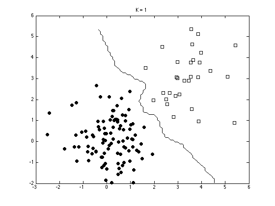
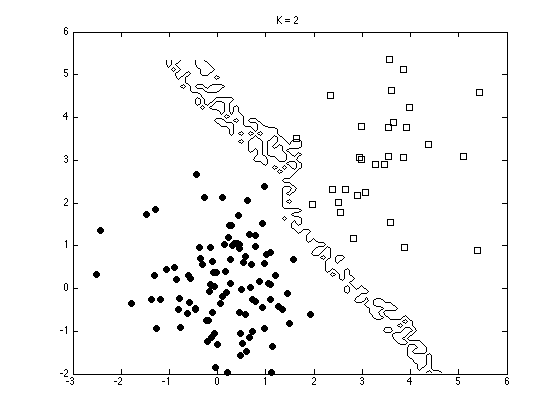
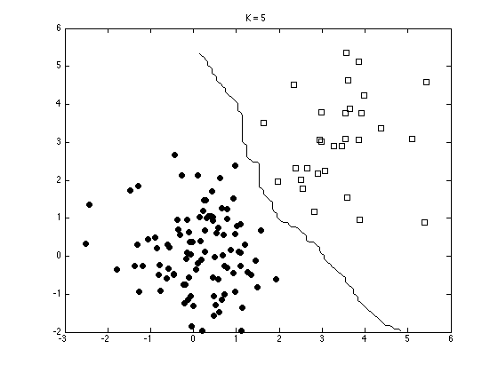
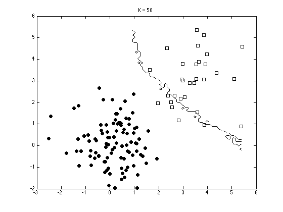
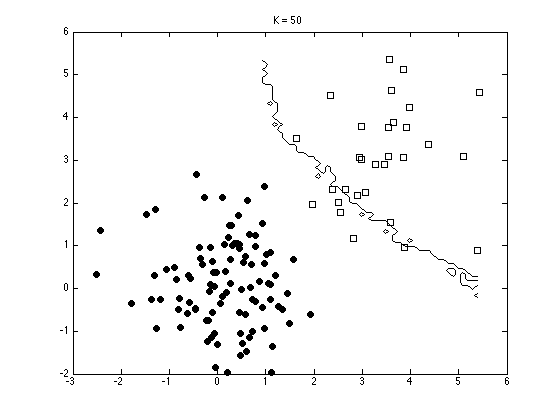

Contents
knnexample.m
From A First Course in Machine Learning, Chapter 4. Simon Rogers, 01/11/11 [simon.rogers@glasgow.ac.uk] Setting K in KNN
clear all;close all;
Generate some data
N1 = 100; N2 = 30; % Class sizes
x = [randn(N1,2);randn(N2,2)+3];
t = [repmat(0,N1,1);repmat(1,N2,1)];
N = size(x,1);
Plot the data
ma = {'ko','ks'};
fc = {[0 0 0],[1 1 1]};
tv = unique(t);
figure(1); hold off
for i = 1:length(tv)
pos = find(t==tv(i));
plot(x(pos,1),x(pos,2),ma{i},'markerfacecolor',fc{i});
hold on
end

Generate the decision boundaries for various values of K
[Xv Yv] = meshgrid(min(x(:,1)):0.1:max(x(:,1)),min(x(:,2)):0.1:max(x(:,2))); % Loop over test points Kvals = [1 2 5 10 20 50 59]; for kv = 1:length(Kvals)
classes = zeros(size(Xv));
K = Kvals(kv);
for i = 1:length(Xv(:))
this = [Xv(i) Yv(i)];
dists = sum((x - repmat(this,N,1)).^2,2);
[d I] = sort(dists,'ascend');
[a,b] = hist(t(I(1:K)));
pos = find(a==max(a));
if length(pos)>1
order = randperm(length(pos));
pos = pos(order(1));
end
classes(i) = b(pos);
end
figure(1); hold off
for i = 1:length(tv)
pos = find(t==tv(i));
plot(x(pos,1),x(pos,2),ma{i},'markerfacecolor',fc{i});
hold on
end
contour(Xv,Yv,classes,[0.5 0.5],'k')
ti = sprintf('K = %g',K);
title(ti);
   
 
 
end